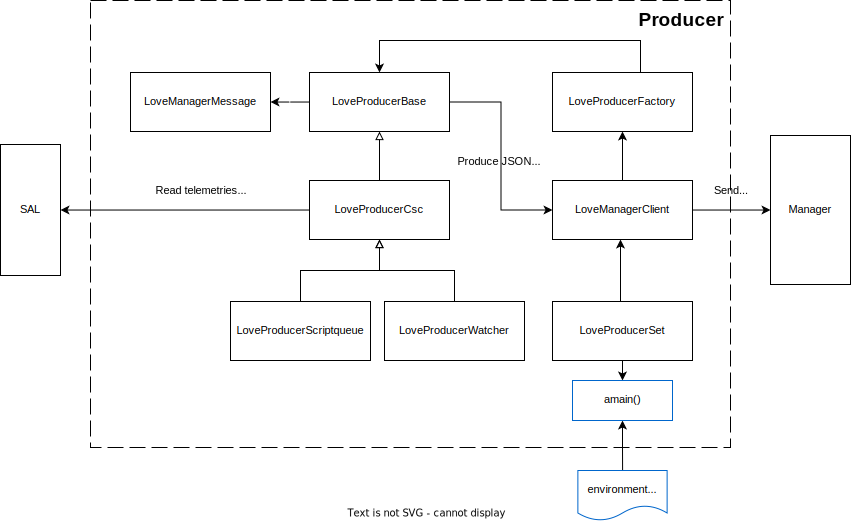

How it works
The LOVE-Producer base code consists of several python classes (LoveManagerClient, LoveManagerMessage, LoveProducerBase, LoveProducerCSC, LoveProducerFactory and LoveProducerSet).
Also there are special classes for custom CSC behavior: LoveProducerScriptqueue and LoveProducerWatcher.
LoveManagerClient
The LoveManagerClient class is in charge of handling the communication with the LOVE-manager.
This class is responsible of three things:
Handle connections by generating a websocket client to the LOVE-manager server.
Send messages to the LOVE-manager through the websocket client.
Create one or more producers of choice by using the
LoveProducerFactoryclass.
LoveManagerMessage
The LoveManagerMessage class is used to create messages to be sent to the LOVE-manager.
Messages can be of two types: subscription and data.
Subscription messages are used to subscribe to a specific channel which the LOVE-manager will use when a new client connects to tell the producer to send the specificied stream data. This is done by sending a message with the following structure:
{
"option": "subscribe",
"category": "initial_state",
"csc": "ScriptQueue",
"salindex": 'all',
"stream": "availableScripts",
"producer_snd": 1690852640
}
Data messages are used to send the data of a stream to the LOVE-manager. These messages have the following structure:
{
"category": "event",
"data": [
{
"csc": "ScriptQueue",
"salindex": 1,
"data": {
"availableScripts": {
"standard": { ... },
"external": { ... }
},
}
}
]
}
LoveProducerBase
The LoveProducerBase class provides the basic behavior to produce messages to be sent through the LoveManagerClient.
It can be used as a generic template to create new producers with custom behavior to read data from SAL (or even other source).
It is responsible of the following things:
Sets the component which will be monitored.
Defines the
send_messagemethod to send messages to the LOVE-manager.Runs a task to periodic monitoring telemetries and defines callbacks for asynchronous events.
Provides structures to store the data to be sent to the LOVE-manager.
LoveProducerCSC
The LoveProducerCSC class inherits from LoveProducerBase.
It provides the basic functionality for CSC connection by using the salobj library to read telemetries and events from the specified CSC.
Then it collects the data and produces the messages to be sent through the LoveManagerClient.
LoveProducerScriptqueue
The LoveProducerScriptqueue class inherits from LoveProducerCSC.
It provides custom functionality to read data from the ScriptQueue CSC.
It gerenates a custom message to be sent to the LOVE-manager, which contains the following data:
{
"category": "event",
"data": [
{
"csc": "ScriptQueueState",
"salindex": 1,
"data": {
"stream": {
"enabled": true,
"running": false,
"waitingIndices": [ ... ],
"finishedIndices": [ ... ],
"currentIndex": 0,
"available_scripts": { ... },
"finished_scripts": { ... },
"waiting_scripts": { ... }
}
}
}
]
}
It also provides methods to send ScriptQueue heartbeats back to the LOVE-manager.
LoveProducerWatcher
The LoveProducerWatcher class inherits from LoveProducerCSC.
It provides custom functionality to read data from the Watcher CSC.
It generates a custom message to be sent to the LOVE-manager, which contains the following data:
{
"category": "event",
"data": [
{
"csc": "Watcher",
"salindex": 0,
"data": {
"stream": {
"alarms": { ... }
}
}
}
]
}
LoveProducerFactory
The LoveProducerFactory class was implemented using the factory patter to instantiate different types of producers.
It provides two static methods:
get_love_producer_from_type: to create a producer by setting the type:base,csc,scriptqueue,watcher.get_love_producer_from_name: to create a producer by setting the name and salindex of the CSC in the form<CSC>:<salindex>.
LoveProducerSet
The LoveProducerSet class is used to run the LOVE-producer code, by creating a LOVE-manager client and a set of producers.
It also calls the salobj.Domain method to configure the lsst domain.
It provides the run_love_producer method to run the configured producers using asyncio.
This method is a wrapper of the amain one, which is the one that actually reads the params and runs the producers.
It receives the following params:
components: list of CSCs to be monitored, e.g. ATDome, ATDomeTrajectory, MTHexapod:1.log_level: log level to be used by the LOVE-producer.